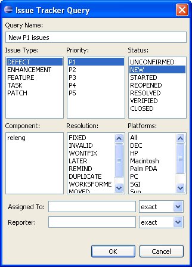

To search for Issue Trrcker issues, create and run a query.
- In the CollabNet Sites >view, click a CollabNet Issue Tracker project node.
- Right-click either of the following and select :
- Project-wide queries
- an issue type under Issue Tracker
The New Tracker Query window appears.

- Enter a name for the query.
- Specify the parameters you want to include in the query and click OK.
- Expand the query in the CollabNet Sites view to see the corresponding issues.